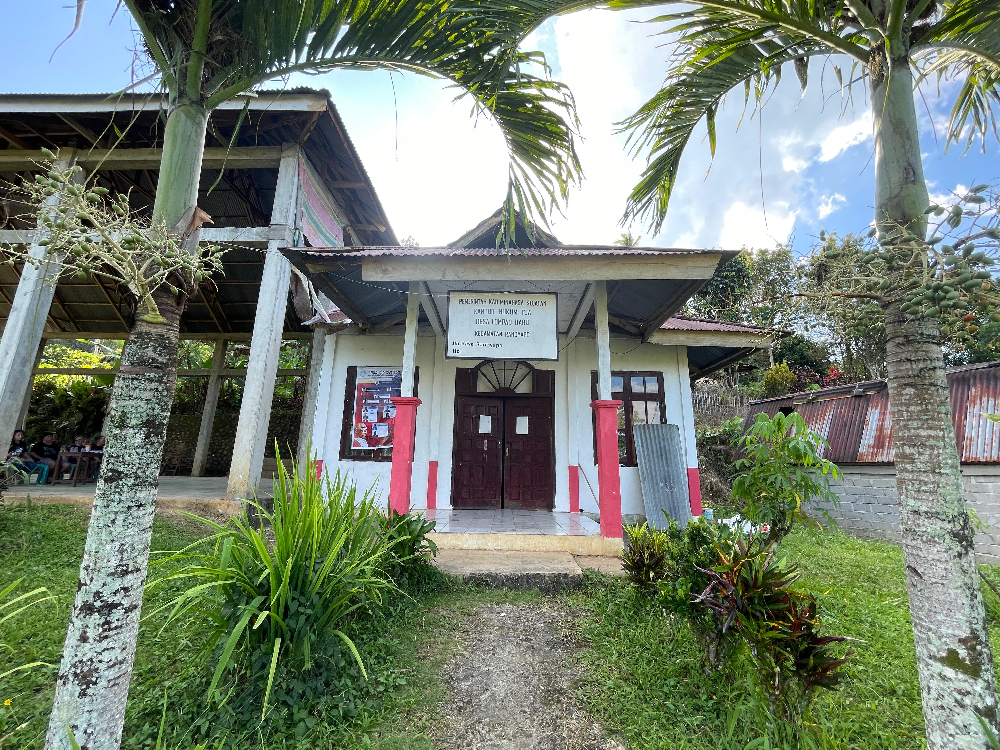
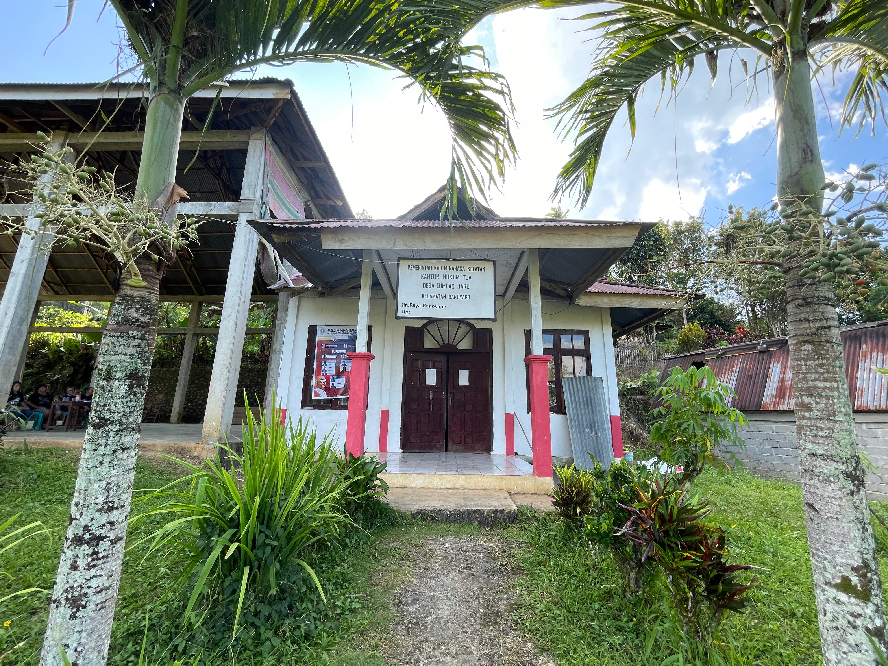

SEJARA DESA LOMPAD BARU
Desa Lompad Baru adalah salah satu desa yang berada di bagian utara lingkup kepolisian wilayah pemerintahan Kecamatan Ranoyapo yang berbatasan dengan wilayah kepolisian Kecamatan Motoling.
Proses Pembentukan/Perkembangan Wilayah
Dengan peristiwa kebakaran ¾ kampong desa Lompad pada tanggal 26 Maret 1956 maka timbullah hasrat sebagian rakyat Lompad pada waktu itu untuk mendirikan sebuah kampong baru disebelah barat + 2 km di tempat sekarang yang dilalui jalan raya.
Sebelum memulai perombakan kompleks kampung pada 18 Juni 1956 pukul 4 dini hari diadakan kebaktian Gerejani di pimpin oleh Han Johanis Josef Tarumampen yang dihadiri oleh:
- Tonaas dengan beberapa rumah lainnya dari Lompad
- Pendeta GMIM Wilayah Motoling, dan di bentuklah Panitia Pembangunan Desa yang diketuai oleh, Adolf Hendrik Tarumampen (tonaas).
Tempat mendirikan gedung gereja (GMIM) diberikan percuma oleh bekas pendeta ( Penolong Injil ) Altin Lumenta. Pada peletakkan batu pertama sebagai tanda dasar Peletakkan Pendirian Desa ( depan gedung gereja GMIM sekarang ) dan itulah sebabnya gedung gereja yang ada ditempat itu sekarang di namakan “BETEL” sebagaimana yang diambil dalam Alkitab karena dasar pendirian kampung adalah secara gerejani. Pada tanggal 27 Juni 1956 A.H. Tarumampen ( tonaas ) bersama keluarganya memulai mendiami tempat ini dan beberapa rumah tangga lainnya. Beberapa Pamong Desa Lompad dipimpin oleh Hukum Tua, H.Pangemanan / alm Hanock. Dengan peristiwa penempatan pertama oleh Tonaas bersama keluarganya ( A.H.J. Tarumampen ) beberapa keluarga lainya pada tanggal 27 Juni 1956 maka tanggal tersebut di jadikan tanggal berdirinya desa dan dirayakan tiap tahun dengan Kebaktian Umum. Tentang nama desa dinamakan Desa Lompad Baru sekitar terjadinya desa penduduknya berasal dari Desa Lompad. Pada tahun 1958 ada pemikiran-pemikiran nama desa ialah : Metuari namun pada tahun 1959 hanya terbiasa dengan Lompad Baru. Pada tahun 1976 pada usul-usul perubahan nama desa ialah :
- J.A.Kalalo : ACHITAWERU ( Pada kita baru )
- T.S.BUTSI ( Agus Arianto ) PANCASILA ( Dasar Negara Repoblik Indonesia )
- H.J.J.Tarumampen : ANUTA ( Kepunyaan Kita )
- Jan Merentek: LOMBA ( Lompad Baru ) KAMBESI (Nama pohon / tumbuhan yang kira-kira100 meter sebelah selatan kampung api sekarang itu tidak ada lagi), SINOKOT (Nama kompleks kampung sebelah barat ) sebelum ada desa tanah yang di potong di buat jalan raya.
Nama-nama desa tersebut diatas ini di bicarakan dalam rapat umum tanggal 22 Februari 1976, bertempat di gedung gereja GMIM Betel Lompad Baru. Rapat tokoh-tokoh masyarakat tanggal 14 Maret 1976 bertempat di gedung gereja GMIM khusus membicarakan tentang nama desa. Kambesi dan Metuari serius dicalonkan sehingga diadakan undian. Pada akhirnya Metuari mendapat 5 suara & Kambesi 16 suara.
Pengakuan berdirinya desa oleh pemerintah :
- Oleh kepala Kecamatan Motoling : A. Masinambow, dengan status desa otonomi terbatas. Surat keputusan tanggal 8 Agustus 1965 No. 477 / 6. Terhitung mulai 1 Oktober 1965
- Oleh kepala Daerah Kabupaten Minahasa : F. Sumampow dengan Surat Keputusan tanggal 8 Oktober 1969 No.Pemb. 1 / 2 / 37 / 69 terhitung 1 April 1969 dengan Hukum Tua I Adolf Hendrik Tarumampen ( Tonaas )